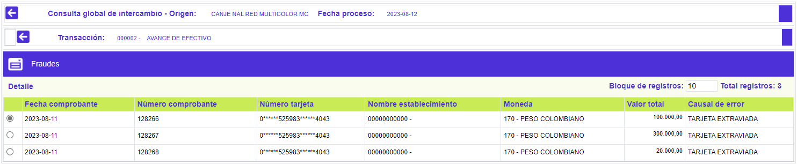
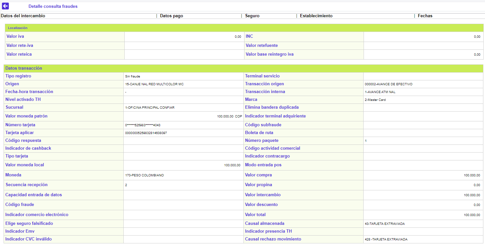
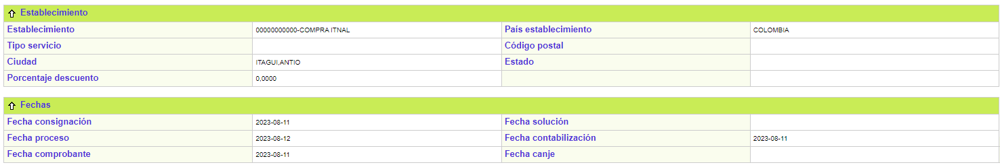

Consulta global de intercambio
Fraudes: Si las transacciones fueron realizadas mediante un plástico previamente reportado como extraviado o hurtado el sistema las envía a la opción de Fraudes.
El formulario contiene las opción Detalle, y cuenta en la parte superior con un botón para volver al formulario principal de la Consulta global de intercambio.

Fecha comprobante |
Muestra la fecha física del comprobante de consumo o utilización. |
Número comprobante |
Despliega el número del comprobante de consumo o utilización. |
Número tarjeta |
Reseña el número de la tarjeta a través de la que se realizó el consumo o utilización, plástico que fue reportado como extraviado o hurtado. |
|
Nombre establecimiento |
Contiene el nombre comercial del establecimiento en que se realizó la transacción. |
Moneda |
Despliega la abreviatura definida por la franquicia que identifica Moneda original de la transacción. |
Valor total |
Muestra el monto por el cual fue realizada la transacción considerada fraudulenta. |
Causal de error |
Campo que contiene el código de la causal de error determinado por la validación del movimiento. |
Detalle: Si el usuario invoca la opción Detalle se despliega un formulario con los bloques: Datos transacción, Datos de intercambio, Datos de pago, Seguro, Establecimiento, y Fechas.
Mediante este formulario se muestra la consulta de las transacciones que por efecto de las validaciones presentan alguna inconsistencia de datos. La información es agrupada en Datos transacción y de intercambio, el primero de los cuales reúne lo concerniente al origen o fuente de la transacción, valores monetarios, características de la transacción e información del establecimiento de comercio en que se realizó; el segundo grupo ilustra los detalles asociados con la entidad receptora y destino de la transacción, finalizando con datos referentes a las transacciones de pago.


Formulario principal | Tapa contable | Movimiento diario | Rechazo cargue | Pendientes Contracargos | Intercambio | Efectos al cobro | Rechazo cargue convenios